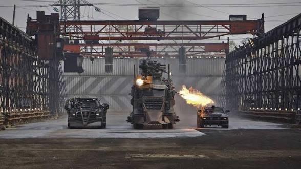

💥 💀 💣 DEATH RACE (2008) — CERTIFIED MGC VF-24

🏛 MGC LOWER COURT OF APPEALS
- ASSET TITLE: 💥 💀 💣 DEATH RACE (2008) – The Terminal Island Armored V8 Mustang Strike
- BASELINE BENCH ASSESSMENT: Room Allocation ➔ MGC VF-24 (Low-Mid Very Fine / Heavy-Metal Prison-Track Specimen)
- PRESIDING DOCKET: MGC Judge Bob & Chief Justice MGC
- CASE FILE: #076
📜 THE INITIAL INQUEST & FORENSIC LOG (3-FLAW DEFECT LOG)
Under a cold, disciplined 5x lens review, Paul W.S. Anderson’s 2008 heavy-alloy re-strike packs unmistakable mechanical striking power—real welded steel armor plates, tombstone-reinforced Mustangs, twin M134 miniguns, napalm droppers, roaring supercharged V8 audio, and Jason Statham delivering peak blue-collar stoicism alongside Ian McShane’s gravel-voiced pit-crew chief. However, three clear structural defects weigh down the planchet and hold it at VF-24:
🚨 Key Planchet Flaws:
1. The Hyper-Kinetic Quick-Cut Editing Fatigue
- During the three-stage Terminal Island track battles, rapid sub-second camera cuts and shaky-cam impacts frequently obscure the spatial geography of the wrecks, creating noticeable visual circulation wear across otherwise impressive practical vehicle stunts.
2. The Thin Corporate-Warden & Frame-Up Script Alloy
- The setup framing Jensen Ames for his wife’s murder—combined with Joan Allen’s cartoonishly villainous Warden Hennessey screaming profanities for pay-per-view ratings—relies on razor-thin B-movie plot convenience rather than tight narrative tension.
3. The Predictable Three-Stage Track Loop
- Structuring the runtime strictly around Stage 1, Stage 2, and Stage 3 eliminations before a telegraphed prison-break finale creates a linear, video-game-level repetition that prevents the story from shifting into a higher gear.
🔍 THE FINAL DECREE & CERTIFIED JUDGMENT
- The Final Executive Verdict: With all three defects sustained, the appellate review denies any score bump. Practical stunt work and heavy-metal aesthetics balance out the narrative and editing flaws, cementing the final certified score at MGC VF-24 (Low-Mid Very Fine Specimen).
- MGC Judge Bob slams his gavel down. Case Closed! 💥💀💣

• © 2026 MOVIE GRADING CONSENSUS. All Sovereign Rights Reserved.